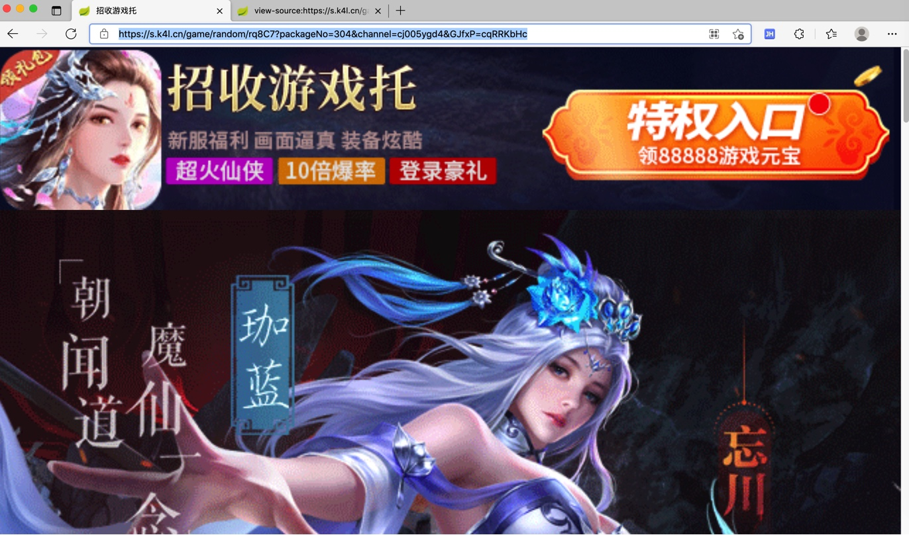

其他小例子
此处给出一些其他的Playwright的应用案例：
用Playwright实现短链解析长链
代码：
def parseUrl(inputUrl, page=None):
"""Parse (redirected final long) url, title, html from input (possible short link) url
Args:
inputUrl (dict): input original (short link) url
page (Page): Playwright page. Default is None. If None, create a new one.
Returns:
parse result(dict)
Raises:
"""
respValue = None
if not page:
page = initPage()
try:
page.goto(inputUrl)
parsedLongLink = page.url # https://api.interactive.angpi.cn/interactive.htm?dateUnix=1588341459669&adSpaceCode=MEDIA200501215739781110&tinyUrl=5NGSFX&domain=m6z.cn&bulletinId=66e0953cdc614aa6a72eb44ba7927b71&sys=pc&tencent=0&reqId=66e0953cdc614aa6a72eb44ba7927b71&mediaRequestId=66e0953cdc614aa6a72eb44ba7927b71
logging.debug("parsedLongLink=%s", parsedLongLink) # 'https://miyuanxp1260.kuaizhan.com/?inviteCode=RWXK5M&osType=1'
longLinkTitle = page.title() # '现金大派送'
logging.debug("longLinkTitle=%s", longLinkTitle)
longLinkHtml = page.content()
logging.debug("longLinkHtml=%s", longLinkHtml)
respValue = {
"isParseOk": True,
"url": parsedLongLink,
"title": longLinkTitle,
"html": longLinkHtml,
}
except Exception as err:
errStr = str(err)
# 'net::ERR_NAME_NOT_RESOLVED at http://dmh2.cn/9jaSp0\n=========================== logs ===========================\nnavigating to "http://dmh2.cn/9jaSp0", waiting until "load"\n============================================================\nNote: use DEBUG=pw:api environment variable to capture Playwright logs.'
# 'net::ERR_CONNECTION_CLOSED at http://zhongan.com/Ahita\n=========================== logs ===========================\nnavigating to "http://zhongan.com/Ahita", waiting until "load"\n============================================================\nNote: use DEBUG=pw:api environment variable to capture Playwright logs.'
# 'Timeout 10000ms exceeded.\n=========================== logs ===========================\nnavigating to "http://zhongan.com/Ahita", waiting until "load"\n============================================================\nNote: use DEBUG=pw:api environment variable to capture Playwright logs.'
#
logging.debug("Playwright goto %s exception: %s", inputUrl, errStr)
respValue = {
"isParseOk": False,
"errMsg": errStr,
}
return respValue
举例：
- 输入：
输出
{ "isParseOk": true, "url": "https://s.k4l.cn/game/random/rq8C7?packageNo=304&channel=cj005ygd4&GJfxP=cqRRKbHc", "title": "招收游戏托", "html": """\n<!DOCTYPE html>\n<html lang="zh-CN">\n<head>\n <meta charset="UTF-8">\n <meta name="viewport" content="width=device-width, initial-scale=1, maximum-scale=1, user-scalable=no">\n <meta name="apple-mobile-web-app-capable" content="yes">\n <meta name="apple-mobile-web-app-status-bar-style" content="black">\n <meta content="telephone=yes" name="format-detection"/>\n <script>\n (function (doc, win) {\n var docEl = doc.documentElement,\n resizeEvt = 'orientationchange' in window ? 'orientationchange' : 'resize',\n recalc = function () {\n var clientWidth = docEl.clientWidth;\n if (!clientWidth) return;\n\n docEl.style.fontSize = 100 * (clientWidth / 750) + 'px';\n if(document.getElementById("preLoader")){\n setTimeout(function () {\n document.getElementById("preLoader").style.display="none";\n document.getElementById("common-container").style.visibility="visible";\n },1)\n }\n };\n\n if (!doc.addEventListener) return;\n win.addEventListener(resizeEvt, recalc, false);\n win.addEventListener('resize', recalc, false);\n doc.addEventListener('DOMContentLoaded', recalc, false);\n })(document, window);\n </script>\n <title></title>\n <link rel="stylesheet" href="/games/all_css/common_v20210407.css" type="text/css"/>\n <script type="text/javascript" src="https://c3cdn.qq.com/dj-sdk/bundle.js?version=1.1"></script>\n <style>\n .pop-wrap,.popwrap {display: none}\n .bao {width:20%;-webkit-transform:rotate(-45deg);-moz-transform:rotate(-45deg);opacity:0;margin-top: -1.2rem;}\n .active{ -webkit-animation:top2Bottom 1s linear;\n animation:top2Bottom 1s linear}\n @-webkit-keyframes top2Bottom{\n 0%{opacity:1;-webkit-transform:translate(0) rotate(-30deg);transform:translate(0) rotate(-30deg)}to{opacity:.1;-webkit-transform:translate(600px,1000px) rotate(-30deg);transform:translate(600px,1000px) rotate(-30deg)}}\n @keyframes top2Bottom{\n 0%{opacity:1;-webkit-transform:translate(0) rotate(-30deg);transform:translate(0) rotate(-30deg)}to{opacity:.1;-webkit-transform:translate(600px,1000px) rotate(-30deg);transform:translate(600px,1000px) rotate(-30deg)}}\n .hongbao {position: fixed;z-index:55;left:-100%;top:-3rem;width:100%;height:160%;overflow: hidden;}\n </style>\n</head>\n<body>\n <div id="app" style="overflow-x: hidden;">\n <image-header :remote-path="remoteHeader"></image-header>\n <image-block src="1.gif">\n <download-button index="btn_gift" style="bottom:1.2rem;height:2.6rem;left:0;width:30%;">\n </download-button>\n <download-button index="btn_1" style="bottom:0;height:1.6rem;width:80%;left:20%">\n </download-button>\n </image-block>\n <image-block src="2.gif">\n <download-button index="btn_2" class="full-line-button" style="bottom:0;height:2rem">\n </download-button>\n </image-block>\n <image-block src="3.jpg">\n <div class="triggle" style="top: 3.16rem; left: 33.2%; width: 33%;z-index: 20;position: absolute">\n <image-block id="rotate" src="btn.png">\n </image-block>\n </div>\n <download-button index="btn_3" class="full-line-button" style="bottom:0;height:2rem">\n </download-button>\n </image-block>\n <redpacket class="popwrap" src="[gift.png]" masked show-delay="0" content-position="2rem" content-width="90%" hideable>\n <download-button index="btn_gift" style="height:3rem; bottom:0;width: 80%;right:10%">\n </download-button>\n </redpacket>\n <redpacket class="pop-wrap" src="[luck.png]" masked show-delay="0" content-position="2rem" content-width="92%" close-button="right:0;top:0;height:1.5rem;width:40%">\n <download-button index="btn_yu" style="height:3rem;bottom:1.5rem;right:5%;width:90%;">\n </download-button>\n </redpacket>\n <div class="hongbao">\n <image-block v-for="i in 8" v-key="i" class="bao" :class="'bao'+i" src="yu.png" >\n </image-block>\n </div>\n </div>\n <input id="pageNo" type="hidden" value="2021-6-8_57">\n <script src="/games/all_js/jquery.min.js"></script>\n<script src="/games/all_js/clipboard.min.js"></script>\n<script src="/games/all_js/jquery-ui.v21.2.22.js"></script>\n<script src="/games/all_js/awardRotate.js"></script>\n<script>\nvar bRotate = false;\n\n $('#app').on('click', '.triggle', function () {\n if(bRotate) return;\n rotateFn(300);\n });\n\n var rotateFn = function (angles){\n bRotate = !bRotate;\n $('#rotate').stopRotate();\n $('#rotate').rotate({\n angle: 0,\n animateTo: angles+1800,\n duration: 3000,\n callback: function (){\n bRotate = !bRotate;\n $('.popwrap').delay(250).show();\n }\n })\n };\n\n var count = 0\n $(window).on('scroll', function() {\n if (this.scrollY > 150 && count==0) {\n $('.hongbao').css('left','0');\n $('.bao').each(function(index,item){\n setTimeout(function(){\n $(item).addClass('active');\n },Math.floor((Math.random()*800)));\n })\n count=1;\n $(".pop-wrap").delay(1000).fadeIn();\n $(".hongbao").delay(1000).fadeOut();\n }\n });\n\n $('.close-popout').on('click', function() {\n $('.popout-wrap').hide().css('top', '-100%').show();\n });\n</script>\n</body>\n</html>\n""", }长链页面
- 